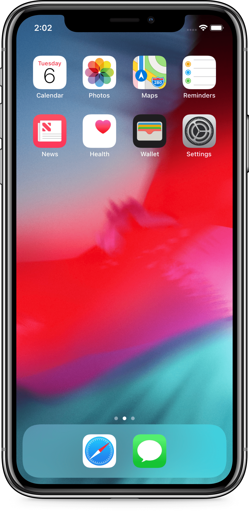

Question 1.Light is a form of...?
Quiz
Question 2.The colour of light is dependent on the light's...
Question 2.If you were painting, what form of color mixing would you be using?
Question 2.If you were mixing colours on a screen, this would be an example of...?
Screens of Today
How is additive light used on our devices?
Almost every digital device we use today uses combinations of color to create different levels of brightness and hue! From our phones to our televisions, pixels comprised of blue, red and green emitters give the illusion of a whole range of color.
Have a play around with mixing colour by pressing the plus button below!

iPhone XPentile OLED Display
An organic light-emitting diode (OLED) works in the much the same way to an LED display, but an OLED display works without a backlight because it emits visible light. Thus, it can display deep black levels and can be thinner and lighter than a LCD display. In low ambient light conditions (such as a dark room), an OLED screen can achieve a higher contrast ratio than an LCD.
Apple WatchMicroLED Display
microLED, also known as micro-LED, mLED or µLED, is an emerging flat panel display technology. As the name implies, microLED displays consist of arrays of microscopic LEDs forming the individual pixel elements. When compared to the widespread LCD technology, microLED displays offer better contrast, response times, and energy efficiency.
TV SetLED Display
LED Displays use LEDS (light-emitting diodes) which emit light when activated. One of the most common display technologies on the market, LEDS are used in applications as diverse as aviation lighting, automotive headlamps, advertising, general lighting, traffic signals, camera flashes, lighted wallpaper and medical devices.